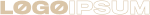

طراحی های وب بصری خیره کننده ای که با ترکیب صدای برند
شما و نیازهای مشتری، مخاطبان شما را مجذوب خود می کند.
در مورد طراحی وب
راهحلهای توسعه وب سفارشی را دریافت کنید که مطابق با مشخصات شما طراحی شده است تا تجربه کاربری بینقصی را ارائه دهد
در مورد طراحی وب
استراتژی های سئو اثبات شده که عملکرد آنلاین شما را افزایش می دهد و شما را در صف اول نتایج جستجوی ارگانیک قرار می دهد
در مورد طراحی وب
ببینید
فرآیند ما تضمین می کند که ما یک وب سایت متناسب با نیازهای کسب و کار شما ایجاد می کنیم
ببینید مشتریان من در مورد کار با من و نتایجی که به آنها کمک کردم چه می گویند.
آریک یک طراح وب درجه یک است که یک وب سایت خیره کننده برای تجارت من ایجاد کرده است.
او به نیازهای من توجه داشت و در تمام طول فرآیند خدمات عالی
به مشتریان ارائه کرد. من خدمات او را به شدت توصیه می کنم.
کار با آریک در طراحی مجدد وب سایت من یک تجربه فوق العاده بود. او توانست دید من را بگیرد و آن را به یک وب سایت زیبا و کاربردی تبدیل کند. توجه او به جزئیات و رویکرد خلاقانه بی نظیر است. من نمی توانستم از نتیجه نهایی خوشحال باشم.
من از کار با آریک در یک پروژه توسعه وب سایت لذت بردم
و از تخصص و حرفه ای بودن او شگفت زده شدم.
او این فرآیند را یکپارچه کرد
و وب سایتی را ارائه داد که فراتر از انتظارات ما بود. من به شدت Arik
را برای تمام نیازهای توسعه وب شما توصیه می کنم
 کارن لی
کارن لیآریک نه تنها یک طراح وب استثنایی است،
بلکه کار کردن با او نیز لذت بخش است.
او برای درک کسب و کار من و نیازهای منحصر به فرد آن وقت گذاشت و وب سایتی ایجاد کرد که کاملاً نشان دهنده برند من باشد. من خدمات آریک را به هر کسی که به دنبال یک طراح وب با کیفیت بالا است توصیه می کنم
خدمات سئوی آریک به کسب و کار من کمک کرده تا حضور آنلاین خود را بهبود بخشد و ترافیک وب سایت ما را افزایش دهد.
او آگاه، حرفه ای است و نتایج عالی ارائه می دهد. من او را برای تمام نیازهای سئوی شما به شدت توصیه می کنم.
خدمات توسعه آریک درجه یک هستند.
او می تواند ایده های پیچیده را بپذیرد و آنها را به وب سایت های کاربردی و کاربر پسند تبدیل کند. توجه او به جزئیات و تعهد او به رضایت مشتری بی نظیر است. من به شدت Arik را برای تمام نیازهای توسعه وب شما توصیه می کنم
وب سایتی که ترک می کند یک تاثیر ماندگار!
سلام، من آریک اندرسون هستم - یک فریلنسر متخصص در طراحی وب سایت ممتاز،
توسعه و خدمات سئو. من مشتاق ایجاد راه حل های منحصربفرد و موثر برای مشتریانم هستم
و به هر پروژه ای برخورد شخصی می دهم. بیایید با هم کار کنیم تا دیدگاه شما را زنده کنیم!
اینستاگرام
توییتر
دریبل
رفتار
صفحات سودمند
© 2022 ساخته شده توسط Pawel Gola. ارائه شده توسط Framer